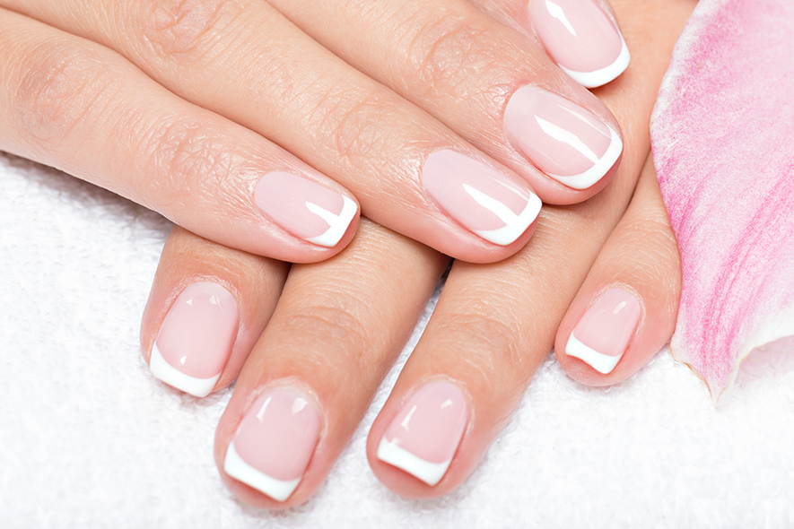

Cosmetology
Interesting facts about our daily routines:

- You can make your own cream like a mayonaise: slowely adding oil to the water product and whiping it at the same time till your cream will have creamy consistance
- You can use everyday a baby hair shower gel if you have a sensitive skin
- It is not recomended to take shower everyday
- If you will drink a jasmin tea regulary, your skin will smell like jasmin as well
Come back to Hobby
Homepage